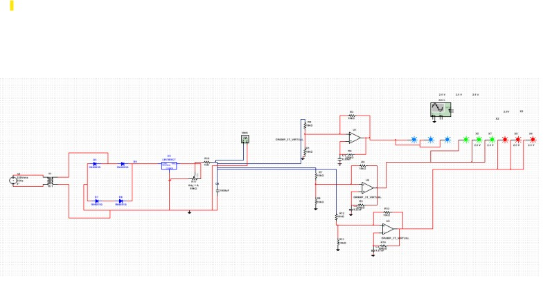
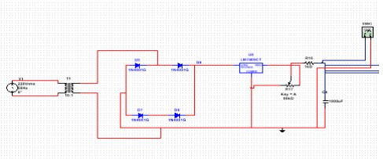
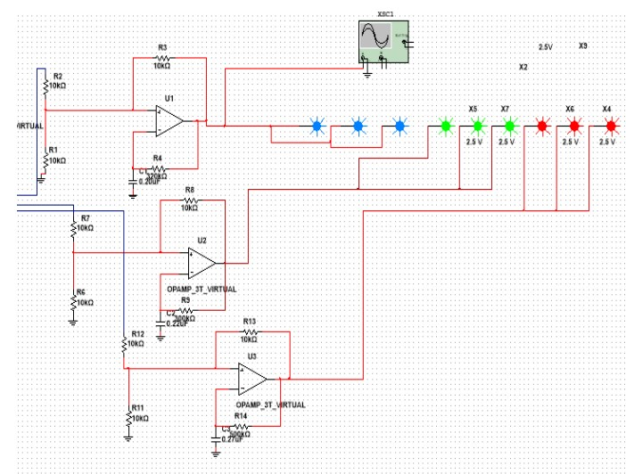
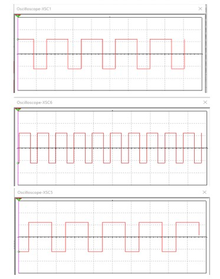

Automatic Holiday Light Display
I designed an analogue holiday light sequencer that turns blue → green → red LED banks on and off in timed patterns. The system steps down and regulates mains AC, then drives three op-amp astable multivibrators whose RC constants set each color’s on/off timing.
Project Overview
The front-end converts and smooths 220 Vrms/50 Hz to a low DC rail using a step-down transformer, a full-wave bridge rectifier, an LM7809 linear regulator, and an RC filter. The logic stage uses three op-amp astables to generate square waves with different delays for the LED strings.
Circuit Schematic

Power Stage (Voltage Regulation)

- Transformer: 10:1 step-down, ~22 Vac at secondary (Fig. 10–11).
- Bridge Rectifier: 4× diodes; ~1.4 V drop (two diodes in conduction each half-cycle).
- LM7809: fixed +9 V regulator before the RC smoothing stage (Fig. 14–15).
- RC Filter: reduces ripple; measured ~8.16 V DC at the output (Fig. 16–17).
LED Timing (Three Astable Multivibrators)
Each astable uses an op-amp with an RC timing network on the inverting input and a resistive divider (β = R₂/(R₁+R₂)) on the non-inverting input. Different R values set different on/off windows for the three LED colors (Fig. 6).
- Timing equation:
t = 2 R C · ln((1+β)/(1−β)). With R₁=R₂ (β=0.5),t = 2 R C · ln 3. - Calculated on-times (MATLAB): Blue ≈ 0.264 s, Green ≈ 0.330 s, Red ≈ 0.396 s (Figs. 7–9).
- Sequence: Blue → Green → Red repeating, producing a clean holiday pattern (Figs. 18–20).


Results
| Block | Reading | Reference |
|---|---|---|
| Transformer | ~21.9 V (AC) | Fig. 10–11 (p. 7) |
| Bridge Rectifier | ~21.5 V (pulsating DC) | Fig. 12–13 (p. 8) |
| LM7809 Output | ~9.47 V | Fig. 14–15 (p. 8) |
| RC Filter Output | ~8.16 V (DC) | Fig. 16–17 (p. 8) |
| Astable Outputs | Three square waves with staggered periods | Fig. 18–20 (p. 9) |
Measurements and waveforms were captured in Multisim, with timing verified from MATLAB calculations.
Discussion
This analogue approach kept the design low-cost and lab-friendly while demonstrating AC-to-DC regulation, ripple filtering, and RC-controlled timing. The charging/discharging behavior of the capacitor directly sets LED delays, and the method generalizes to other sequencers or flashers.
Conclusion
Using a transformer, bridge, LM7809, and RC filter to produce a stable DC rail—and three op-amp astables with different RC values— we achieved a reliable blue → green → red holiday-light pattern with clean square-wave control.